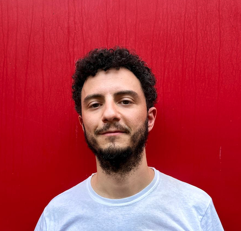

Sociologist based in Milano, Italy. Mainly interested in:
- the link between economic exchange, solidarity, and inter-group conflict
- the impact of social relationships on health
- integrating Agent-Based Modelling (ABM) into Social Network Analysis (SNA)
- peer-review evaluation in scientific publishing
Assistant professor of sociology at the Department of Social and Political Sciences of the University of Milan (Italy), member of the BehaveLab.
Teaching a graduate course on Social Network Analysis.
Author of Reti sociali. Meccanismi e modelli, covering my recent methodological studies on statistical and computational models of social networks, with a few empirical examples (for Italian readers). Here you can find a few presentation slides (in Italian) summarizing its content. Here is an English presentation. Here is a podcast interview (in Italian).
News
30-3-26: I am happy to start today my course for political and social science PhD students on Social Network Analysis. We will learn how to conduct an empirical network research project from design to analysis. I will be uploading teaching material here.
25-3-26: Today I am happy to hold a guest lecture on “Social networks: Mechanisms and models” for the PhD students of the Department of Political Science, Communication, and International Relations of the University of Macerata (Italy). Here for my presentation slides.
30-1-26: A call for papers is out for a special issue of Social Networks on ‘Agent-based modelling for social network research’, co-edited by me, Andreas Flache, Flaminio Squazzoni, and Károly Takács. We are welcoming submissions of extended abstracts by 1 April via this link. The deadline for submitting full manuscripts is 15 November.
29-1-26: Today and tomorrow I’ll be chairing a session on “Experiments, computational models, and network analysis for the study of socio-economic phenomena” at the annual conference of the Italian Society of Economic Sociology at the University of Florence. Here for the programme.